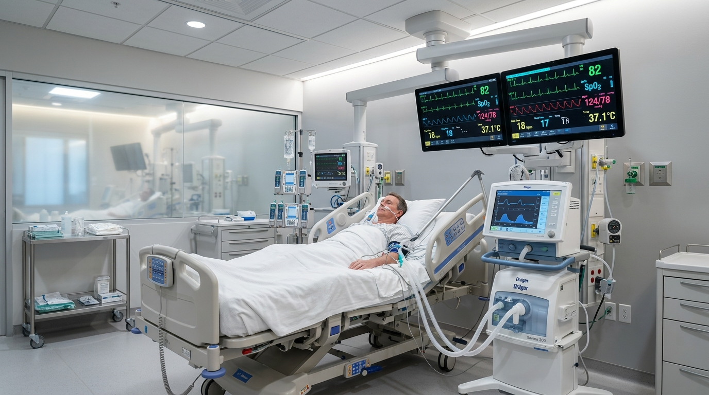
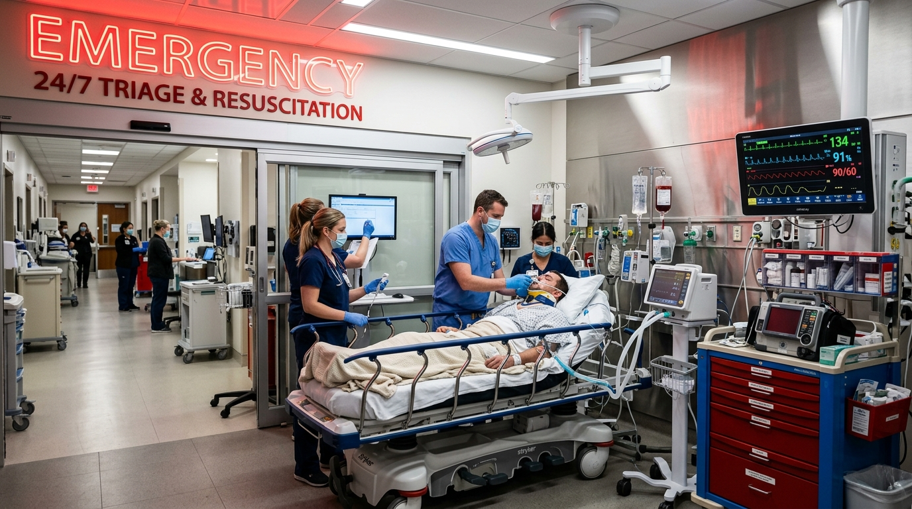
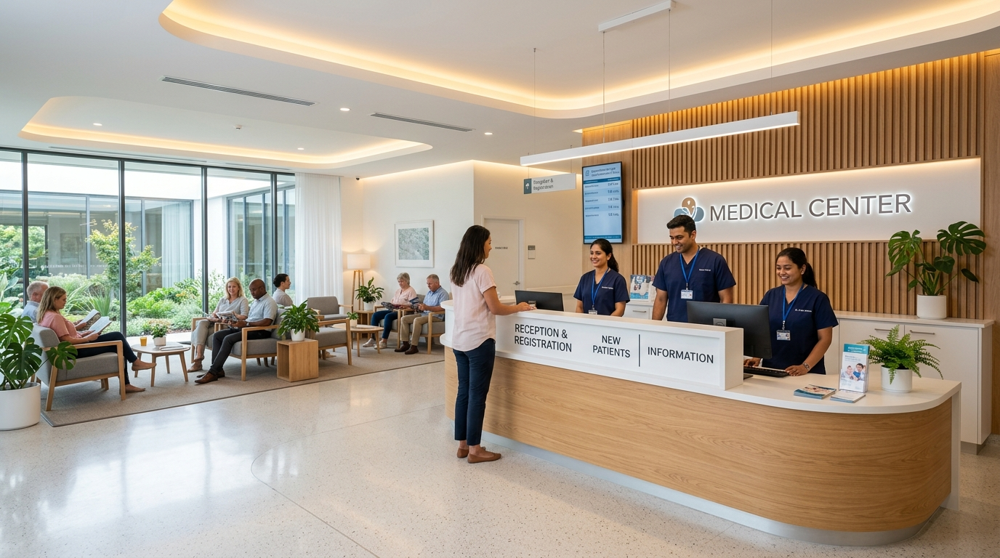

When every second matters, expert critical care you can rely on.
Led by Dr. Pinank Mer (M.D. Physician), Krishiv Hospital provides round the clock intensive care, advanced ventilator support, multi-para cardiac monitoring, and compassionate clinical diagnosis in Junagadh, Gujarat.
Compassionate, evidence-based care guided by Dr. Pinank Mer.
Serving Junagadh and Saurashtra with uncompromising clinical integrity since September 2021.
"Our guiding principle is simple. In medical emergencies, family members look for hope and clinical clarity. We ensure transparent communication, relentless medical precision, and respectful bedside care for every patient who enters our doors."
Specialized diagnosis in complex internal illnesses and multi-organ care.
Trained in life support, respiratory failure, cardiac crises, and septic shock.
Daily structured updates so relatives remain completely informed of recovery progress.
Continuous clinical rounds and round the clock direct physician supervision.
State-of-the-Art Intensive Care Unit
Every critical care bed at Krishiv Hospital is configured for continuous hemodynamic monitoring, immediate ventilatory intervention, and strict infection control.


Multi-Para Cardiac Monitors
Real-time tracking of invasive blood pressure, ECG rhythms, oxygen saturation, temperature, and pulse rate.
Mechanical Ventilators & HFNC
Advanced non-invasive and invasive respiratory ventilators capable of volume and pressure synchronized support.
Syringe Drivers & Infusion Pumps
Ultra-accurate micro-dosing of inotropes, emergency vasopressors, cardiac medications, and sedation fluids.
Biphasic Defibrillator & Crash Cart
Fully mobilized cardiac arrest intervention station with automated external pacing and life-support drugs.
Continuous Medical Oxygen
Uninterrupted piped vacuum and oxygen manifold backed by automated high-capacity reserve cylinders.
1:1 Dedicated Nursing Ratio
Experienced critical care nursing officers trained in aseptic suctioning, ICU hygiene, and vital vigilance.
Clinical Specialities & Medical Services
From emergency resuscitation to chronic illness management, Krishiv Hospital delivers specialized medical treatment under one roof.
Internal Medicine & Diagnosis
Comprehensive clinical assessment for complex, unexplained, or multi-system medical disorders by Dr. Pinank Mer.
- Severe hypertension and cardiac risk control
- Uncontrolled diabetes mellitus and ketoacidosis
- Thyroid, liver, and kidney function stabilization
24/7 Emergency & Trauma Care
Rapid acute stabilization for medical emergencies, accidents, poisonings, and critical metabolic derangements.
- Immediate doctor on call upon arrival
- Cardiac arrest, chest pain, and stroke triage
- Central line placement and emergency airway access
Pulmonary & Chest Medicine
Treatment of acute and chronic respiratory failure, severe viral pneumonia, COPD flare ups, and acute asthma attacks.
- BiPAP, CPAP, and high flow oxygen delivery
- Ventilator weaning and pulmonary rehabilitation
- Continuous blood gas (ABG) correlation
Infectious Diseases & Sepsis
Evidence-based anti-microbial stewardship for high grade tropical fevers, septicemia, and severe organ infections.
- Dengue with severe thrombocytopenia management
- Typhoid, malaria, and leptospirosis protocols
- Post viral multi-inflammatory syndrome treatment
Geriatric & Chronic Care
Specialized bedside support for elderly patients with multiple co-morbidities requiring careful drug adjustment.
- Fall prevention and delirium management
- Nutritional and electrolyte balance monitoring
- Compassionate palliative symptom control
Diagnostics & In-House Pharmacy
Immediate turnaround blood testing and critical medicines stored under temperature-controlled hospital standards.
- Rapid cardiac markers (Troponin, D-Dimer)
- Complete blood counts, serum electrolytes, renal tests
- 24/7 supply of emergency and ICU injectables
Spotless, Calming, and Designed for Healing
Located on the 6th Floor of Om Arcade with dedicated lift accessibility, clean ventilation, and peaceful recovery spaces.

Warm Reception & Comfortable Waiting Area
Our helpful administrative staff ensures prompt registration, clear billing, and dignified guidance for families.
Sterile Intensive Care Zone
Maintained to strict clinical hygiene protocols, continuous air filtration, and controlled patient visiting hours.
Verified Google Reviews
Read authentic feedback from families who entrusted their loved ones to Krishiv Hospital and Dr. Pinank Mer.
"Best in diagnosis treatment and very well maintained hospital. Dr. Pinank Mer takes time to explain every detail patiently to family members. The level of hygiene and ICU supervision gave us immense relief."
"Krishiv hospital in service facility is good and dr behavior is very good. Staff was polite throughout our stay and attended to our calls without delay. Truly grateful for their immediate response."
"I felt my family member was truly in good hands. When we arrived in emergency condition, the doctor quickly stabilized my father and kept monitoring his vitals through the night. Thank you team Krishiv."
"Accurate diagnosis without unnecessary medicine or tests. Dr. Pinank Mer is genuine and gives sufficient time to listen to symptoms. Hospital is neat, clean and organized."
"One of the finest ICU facilities in Zanzarda area. Modern medical equipment and doctor is available round the clock. Transparent charges with proper guidance."
"Very neat and clean hospital on the 6th floor of Om Arcade. Elevators work smoothly for stretchers. The nursing staff is caring and attentive 24 hours."
What to Do in a Medical Emergency
Follow these simple steps when bringing a patient to Krishiv Hospital for immediate admission.
Call Ahead on 093288 23775
Notify our emergency desk while in transit. Mention patient condition so our critical care unit and ventilator are ready.
Direct Access to Om Arcade 6th Floor
Arrive at Zanzarda Cross Road. Use the dedicated building stretcher lift directly to the 6th floor hospital entrance.
Zero-Delay Doctor Triage
Dr. Pinank Mer and emergency nurses immediately begin airway check, vital sign assessment, and life support stabilization.
Clear Family Updates
Complete clinical clarity regarding medical strategy, bedside observation, and next steps with zero unnecessary delays.
Conveniently Located at Zanzarda Cross Road
Situated in the prominent Om Arcade complex, easily accessible from all parts of Junagadh, Keshod, Jetpur, and surrounding Saurashtra districts.
6th Floor, Om Arcade, Zanzarda Cross Road, Zanzarda, Junagadh, Gujarat 362015
093288 23775 (24 Hours Active)
Emergency & ICU: Open 24 Hours, 7 Days a Week
OPD Consultation: Morning 10:00 AM to 1:00 PM | Evening 5:00 PM to 8:00 PM
Frequently Asked Questions
Common questions regarding admission, ICU protocols, visiting hours, and consultation timings.
Yes. Krishiv Hospital operates a full round the clock Intensive Care Unit 365 days a year, including Sundays and public holidays. A qualified medical officer, nursing staff, and emergency medical systems are on continuous duty.
Dr. Pinank Mer (M.D. Physician) directly leads the medical diagnosis, emergency interventions, and ICU care at Krishiv Hospital. He personally conducts clinical assessments and inpatient ward rounds.
Yes. Our ICU is equipped with advanced invasive mechanical ventilators, non-invasive BiPAP/CPAP systems, high flow oxygen therapy, continuous cardiac monitors, defibrillators, and automated infusion pumps.
Om Arcade at Zanzarda Cross Road is equipped with large modern stretcher-compatible elevators. Ambulances can drive right up to the building portico, and our staff can bring a wheelchair or stretcher down to meet the patient immediately.
You can schedule an appointment by calling 093288 23775, messaging our official WhatsApp link, or using the booking form on this website. Walk in consultations are also welcomed during routine OPD hours.
Yes. We have rapid diagnostic facilities for blood tests, cardiac markers, electrolytes, and arterial blood gas (ABG) correlation to ensure timely clinical decisions without waiting for external labs.
Book Doctor Consultation
Dr. Pinank Mer (M.D. Physician) | Krishiv Hospital